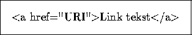

Fra en HTML fil kan man sette opp en såkalt link til et annet objekt på Internettet. Dette gjøres vha. anchor tagen i HTML. Syntaksen for dette ser slik ut:

der URI er en Uniform Resource Identifier, vanligvis en URL, og ``Link tekst'' er den teksten man ønsker å bruke som hypertekst link mot objektet man linker til. Det hele klargjøres best med et par eksempler: